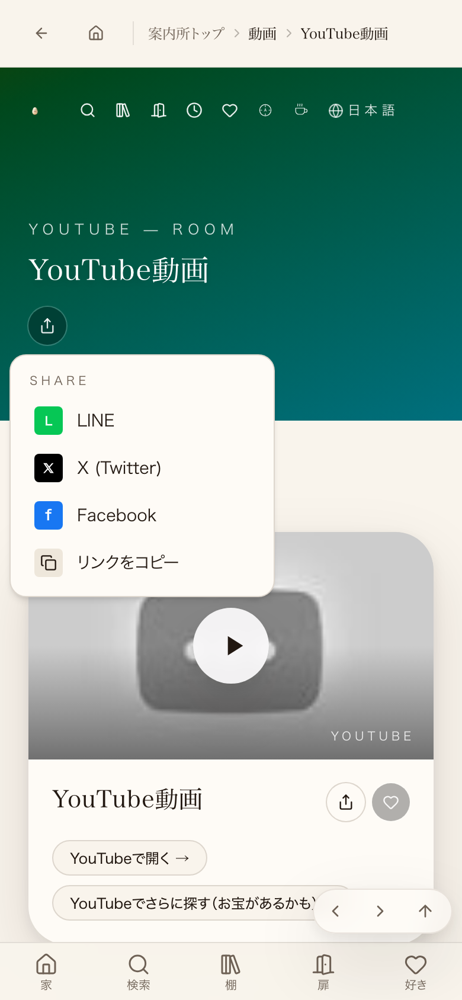
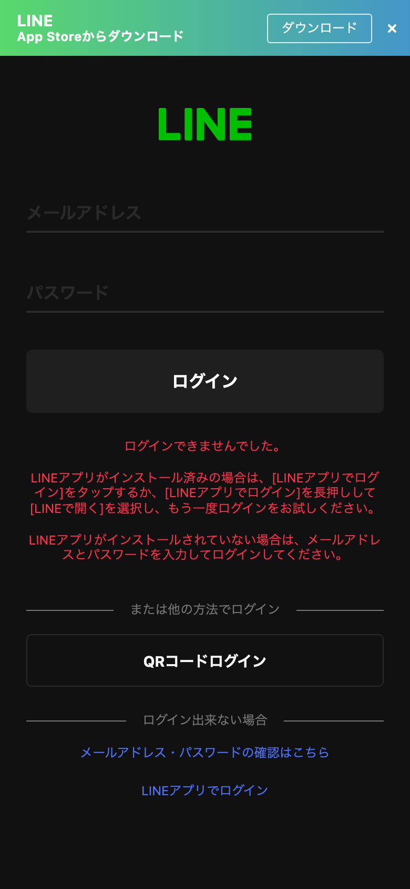
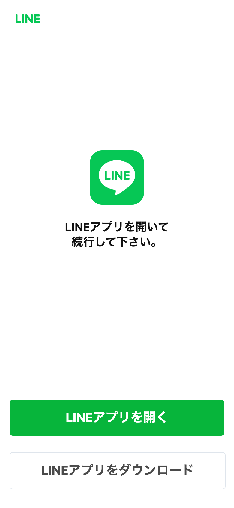

window.open()へ渡ったURLをそのまま開いて撮影した3枚。


| 確認項目 | 結果 |
|---|---|
| 本番ページでシェアボタンを実際にクリック | メニューが開きLINEが選べた |
| メニューのLINEを実際にクリックしwindow.open()の引数を捕捉 | https://line.me/R/msg/text/?...(新URL)が渡された |
| 捕捉した新URLへ実際にアクセス | 200・ログイン画面へリダイレクトされず「LINEアプリを開く」画面のまま |
| 旧URL(social-plugins.line.me)へ同条件でアクセス(比較用) | LINEのログイン画面(access.line.me)へリダイレクト=たまごさんの報告と一致 |
| 本番JSバンドル実測 | social-plugins.line.me=0件・R/msg/text=1件 |